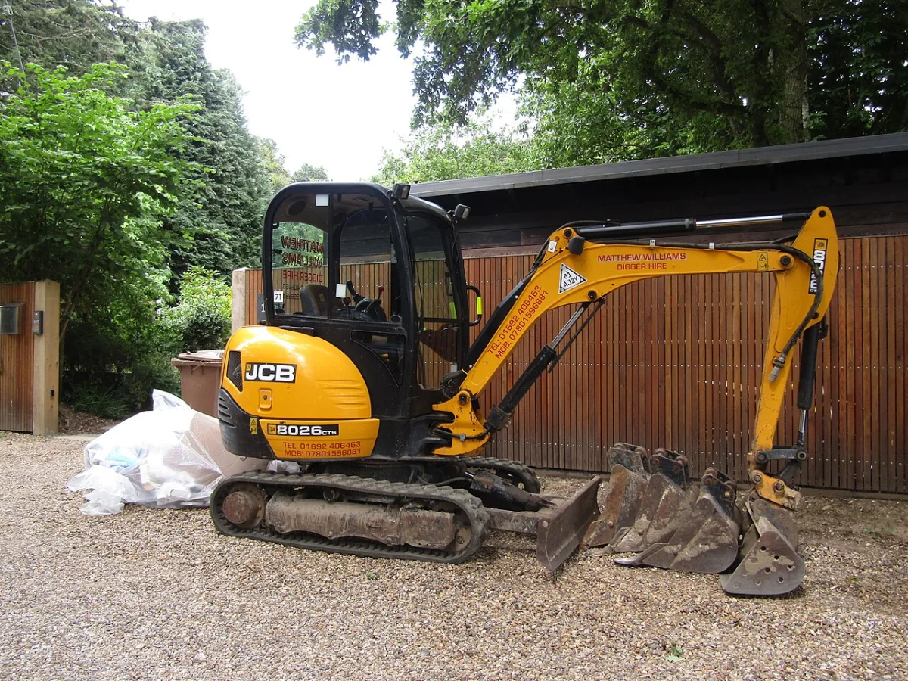
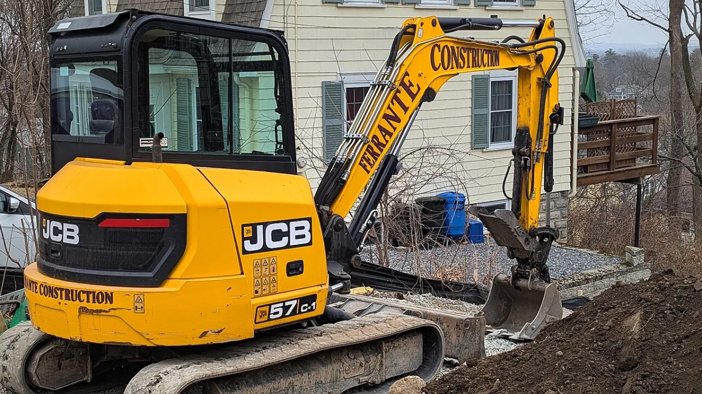
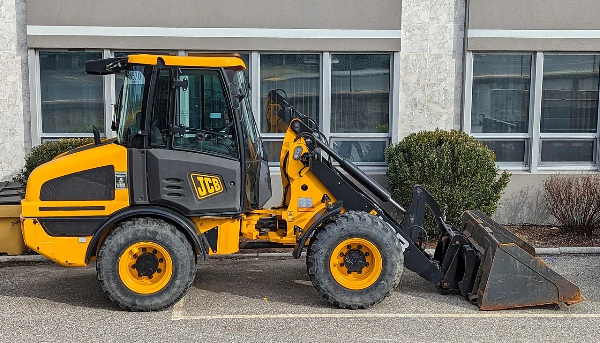

Vlastní technikaNa zakázku přijíždí moje Iveco, které je vidět přímo v reálném provozu.
Technika a přistavení
Vlastní auto a kontejnery ukazuju na fotografiích z reálných zakázek. U bagrů a nakladače jsou níže jasně označené ilustrační snímky správných modelových kategorií. Před výjezdem řeším adresu, materiál, váhu, přístup a bezpečný postup práce.
Z praxe
Nejde o ilustrační techniku. Jezdím vlastním autem s rukou a podle zakázky řeším přistavení kontejneru, odvoz těžkého materiálu i dovoz sypkých hmot tam, kde záleží na přístupu a přesném složení.
Chci cenu
Suť, beton a mokrá zemina se naceňují podle skutečné hmotnosti, přístupu a bezpečného naložení.

Praktická domluva
Fotka místa často řekne víc než dlouhý popis. Pomůže poznat šířku vjezdu, sklon, překážky, prostor pro složení i to, zda bude kontejner stát na vlastním pozemku nebo na veřejném místě. U těžkého nákladu navíc potřebuji vědět, jestli jde o čistou suť, beton nebo zeminu.
Kontejnery
U lehkého odpadu rozhoduje hlavně objem, u suti a zeminy naopak váha. Auto uveze až 8 t nákladu, takže u těžkého materiálu není větší kontejner automaticky lepší řešení. Když si nejste jistí velikostí, pošlete fotku hromady nebo zavolejte.
Těžký materiál. Důležité je nemíchat ho se dřevem, plasty, izolací nebo směsným odpadem bez předchozí domluvy.
U zeminy rozhoduje vlhkost, kámen, kořeny a skutečná hmotnost. Mokrá zemina může být výrazně těžší než odhad.
Často jde spíš o objem. Pomůže vědět, zda je materiál čistý, nebo smíchaný s dalším odpadem.
Menší koupelna, čistá suť, menší výkop nebo rychlá otočka s těžkým materiálem.
Běžná rekonstrukce bytu nebo domu, menší stavba a standardní směs lehčího odpadu po domluvě.
Objemný odpad, vyklízení, dřevo a bioodpad. U těžké suti nebo mokré zeminy není automaticky nejlepší volbou.
Limity přístupu
Telefonicky se rychleji vyjasní úzký vjezd, stání na ulici, omezený prostor, prudký sklon, měkký terén nebo potřeba přesného času příjezdu. U veřejného místa může být potřeba řešit povolení k záboru podle obce nebo městské části.
Pošlete fotku vjezdu a místa, kam má kontejner přijít. Důležité jsou brány, zaparkovaná auta, větve, kabely, svah a možnost otočení.
Napište, zda jde o čistou suť, zeminu, beton, směsný stavební odpad nebo dovoz materiálu. U stavby často pomůže domluvit časové okno.
U písku, štěrku, kačírku, recyklátu nebo zeminy je důležité množství, místo složení a zda jde o příjezdovou cestu, zásyp, zahradu nebo stavbu.
Zemní technika
Fotografie níže jsou ilustrační snímky správných modelových kategorií. Ukazují velikost a typ techniky, kterou vybírám podle přístupu a rozsahu práce.

Vhodný pro jezírka, rýhy, přípojky a práci u rodinných domů.

Pro základy, bazénové jámy, odbahnění a větší terénní úpravy.

Kloubové řízení pomáhá při práci na omezeném prostoru.
Ilustrační fotografie: JCB 8026 CTS — Kolforn, CC BY-SA 4.0; JCB 57C-1 — Daderot, CC0; JCB 407 — Daderot, CC0.
Na zahrady, užší vjezdy a přesné tvarování — jezírka, rýhy, menší výkopy. Šetrný k trávníku i zpevněným plochám.
Výkopy základů rodinných domů, bazénové jámy, odbahnění menších nádrží a větší terénní úpravy.
Odvoz zeminy a dovoz materiálu z míst, kam auto nezajede — zadní zahrady, úzké průjezdy, podmáčený terén.
Rozhrnutí návozů, nakládka a přesun materiálu po pozemku. Kloubové řízení šetří povrch při otáčení.
Stroje vozím autem i na vozíku, takže se dostanou k běžnému rodinnému domu. K bagrům mám širokou sadu příslušenství — napište, co potřebujete, a doporučím vhodné vybavení.
Zakázky nepřeprodávám anonymnímu dispečinku. Vlastní auto a kontejnery jsou na reálných fotografiích, ilustrační snímky zemní techniky jsou výše výslovně označené.
Praktická domluva
U technicky složitějších zakázek je nejlepší spojit v jedné zprávě adresu, fotku přístupu, popis odpadu nebo materiálu a případný požadavek na doklad. Dá se tak lépe potvrdit cena, postup i to, co bude na faktuře nebo v podkladu k odvozu.